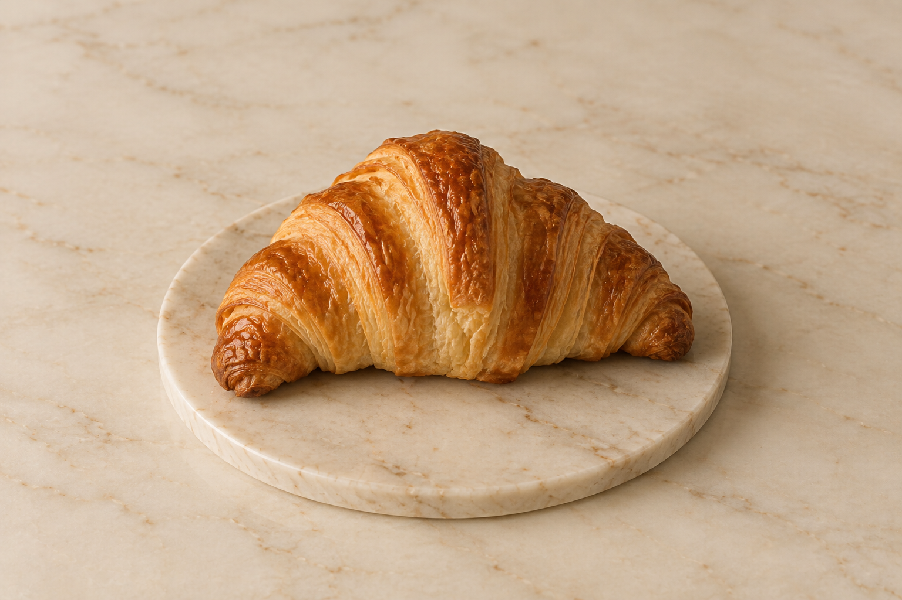
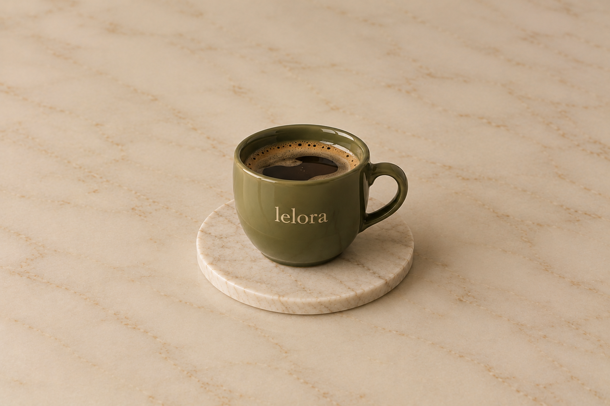

Croissant Amanteigado

Folhado à perfeição, crocante por fora e levemente macio por dentro com aquele leve sabor de manteiga.
 Lelora Café's
Lelora Café's
Saboreie o momento
PADARIA - CAFÉS - MOMENTOS
Onde cada detalhe é feito com amor.
Desde todo o menu, até o seu produto favorito,
experimente conforto em cada mordida.

Folhado à perfeição, crocante por fora e levemente macio por dentro com aquele leve sabor de manteiga.

Um creme suave e aveludado com a acidez na medida certa de uma calda artesanal de frutas vermelhas.

Encorpado e aromático, preparado com grãos selecionados para despertar seus sentidos a cada gole.

O equilíbrio perfeito entre a energia suave do chá verde japonês e a cremosidade do leite bem vaporizado.